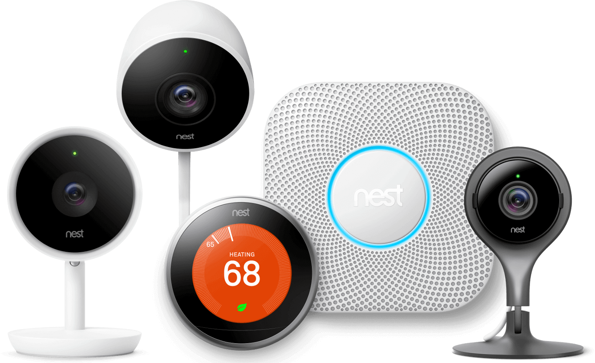
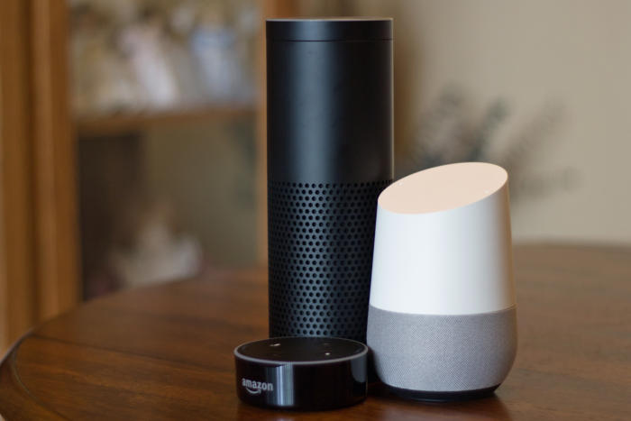

Pengertian Artificial Intelligence (AI)
Kecerdasan buatan adalah cabang ilmu komputer yang bertujuan untuk menciptakan mesin cerdas. Ini telah menjadi bagian penting dari industri teknologi. Penelitian yang terkait dengan kecerdasan buatan sangat teknis dan khusus. Masalah inti kecerdasan buatan termasuk komputer pemrograman untuk sifat-sifat tertentu seperti: Pengetahuan Pemikiran Penyelesaian masalah Persepsi Belajar Perencanaan Kemampuan untuk memanipulasi dan memindahkan objek
pengetahuan rekayasa adalah bagian inti dari penelitian AI. Mesin sering dapat bertindak dan bereaksi seperti manusia hanya jika mereka memiliki banyak informasi yang berkaitan dengan dunia. Kecerdasan buatan harus memiliki akses ke objek, kategori, properti dan hubungan antara semuanya untuk menerapkan rekayasa pengetahuan. Memulai akal sehat, penalaran dan kekuatan pemecahan masalah dalam mesin adalah tugas yang sulit dan membosankan. Robotika juga merupakan bidang utama yang terkait dengan AI. Robot memerlukan kecerdasan untuk menangani tugas-tugas seperti manipulasi objek dan navigasi, bersama dengan sub-masalah lokalisasi, perencanaan gerak dan pemetaan.
Contoh - contoh Artificial Intelligence (AI) :
1. Siri
Siri dapat melakukan panggilan atau mengirim SMS untuk Anda apakah Anda mengemudi, memiliki tangan Anda penuh, atau hanya di perjalanan. Ini juga menawarkan saran proaktif - seperti mengirim SMS kepada seseorang bahwa Anda terlambat untuk rapat - jadi Anda dapat tetap berhubungan dengan mudah.
2. Tesla
Tesla adalah sesuatu yang meniadakan driver manusia. Ini adalah salah satu teknologi mobil terbaik yang tersedia sampai sekarang. Mobil ini tidak hanya mampu meraih banyak penghargaan tetapi juga fitur seperti mengemudi sendiri, kemampuan prediktif, dan inovasi teknologi mutlak.
3. Nest Learning Thermostat (Google)
Nest adalah salah satu startup contoh penerapan Artificial Intelligence paling terkenal dan sukses dan diakuisisi oleh Google pada tahun 2014 seharga $ 3,2 miliar. Nest Learning Thermostat menggunakan algoritme perilaku untuk menghemat energi berdasarkan perilaku dan jadwal Anda. Ini menggunakan proses pembelajaran mesin yang sangat cerdas yang mempelajari suhu yang Anda suka dan program itu sendiri dalam waktu sekitar satu minggu. Selain itu, secara otomatis akan mati untuk menghemat energi, jika tidak ada orang di rumah. Bahkan, ini adalah kombinasi keduanya — kecerdasan buatan serta Bluetooth rendah energi karena beberapa komponen solusi ini akan menggunakan layanan dan solusi BLE.
4. Flying Drones
DRONE / UAV(Unmanned Aerial Vehicle atau disingkat UAV) adalah pesawat yang diterbagkan tanpa awak atau unmanned. Sensor dan kamera dapat melihat posisi drone di ruangan dengan menyambungkannya ke langit-langit. Algoritma generasi lintasan memandu drone tentang bagaimana dan kemana harus bergerak. Dengan menggunakan sistem Wi-Fi, kita dapat mengendalikan drone dan menggunakannya untuk tujuan tertentu — pengiriman produk, pembuatan video, atau pelaporan berita.
5. Alexa
Alexa diluncurkan oleh Amazon, yang semakin pintar dan menambahkan fitur baru. Ini adalah produk revolusioner yang dapat membantu Anda mencari informasi di web, mengatur janji, berbelanja, mengontrol lampu, switch, termostat, menjawab pertanyaan, membaca audiobook, melaporkan lalu lintas dan cuaca, memberikan info tentang bisnis lokal, memberikan skor dan jadwal olahraga , dan lainnya menggunakan Layanan Suara Alexa.
